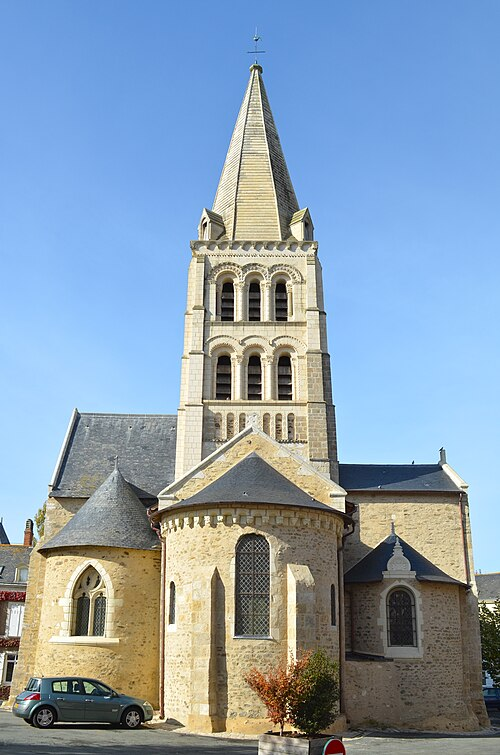

Page dédiée à votre groupe.
Vous devez visiter 4 lieux, un par un.
À chaque étape, répondez à la question et trouvez le code sur place (il est collé sur le support où se trouve la réponse).
Notez ce code dans le cadre ci-dessous pour accéder à l’étape suivante.
Notez également chaque réponse sur votre fiche. À la fin du rallye, vous devrez les annoncer devant tous les élèves de STI2D.
Dans quelques minutes, vous recevrez un premier indice, puis un deuxième dans quelques minutes plus tard, et enfin un troisième indice.
Question 1 :
Lieu :

 Restaurée et agrandie aux 15ème, 16ème puis au 18ème siècles, elle fait partie des rares églises romanes de la région épargnées par la Révolution.
Selon l’historien d’art J. Mallet, son clocher roman constitue l’un des plus beaux de l’Anjou. Roman, Gothique flamboyant, Renaissance,
tous les styles architecturaux y sont présents. Le portail du 18ème, la tour d’escalier du 15ème, le chevet roman à 3 absides (l’une centrale,
les deux autres sur les bras du transept) ainsi que les nombreuses sculptures sont autant d’aspects architecturaux à admirer. A voir à l’intérieur,
les arcades médiévales, la chapelle du Rosaire, le maître-autel, les scènes peintes et le chœur qui abrite sous les badigeons des fresques très anciennes.
Abandonnée en 1885, elle est classée aux M.H. en 1929, et fait l’objet depuis 2004, d’un programme de restauration.
Code : En quel siècle cette église a-t-elle été érigée?
Code incorrect. Essayez encore.
💡 Indice 1 : Cet édifice religieux porte le même nom qu’un autre dans la ville.
💡💡 Indice 2 : PL Notre-Dame‬, 49120 Chemillé ·
💡💡💡 Indice 3 : 11